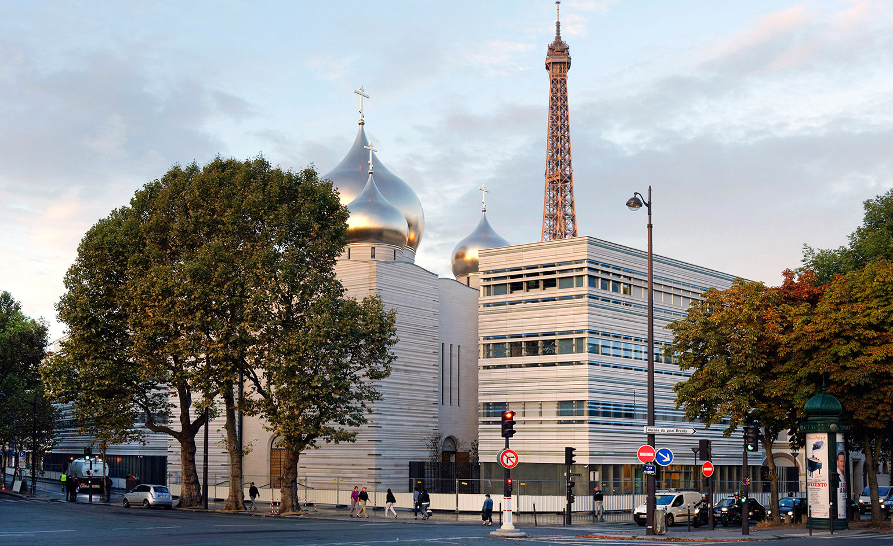

Four institutions on one site, steps from the Eiffel Tower: an Orthodox cathedral crowned by five gilded domes, a parish centre, a bilingual primary school, and a cultural hall. The brief demanded a sacred architecture that belonged both to its Byzantine-Russian lineage and to the 21st-century Parisian riverfront.
Nicolas led the clos-couvert development — the closed and weather-tight envelope — coordinating the stone cladding, glazed roof veil and the structural interface between the cathedral shell and the gilded dome lanterns. He also managed the landscape and public realm works around the ensemble.
The project was delivered through APS, APD, permis de construire, PRO and site supervision. Detailed coordination with French heritage authorities and the Russian ecclesiastical client was a central discipline of the role.